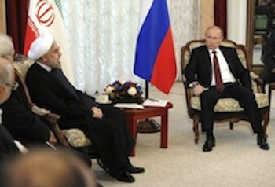

SCO Against Syria Strike
While the members of the Shanghai Cooperation Organization (SCO) largely focused their attention on Syria and Iran at a summit in Bishkek, Kyrgyzstan, joint infrastructure projects and the energy sector were also in the spotlight.
The leaders of the SCO, which includes Russia, China, Kazakhstan, Tajikistan, Uzbekistan and Kyrgyzstan, signed the Bishkek Declaration, which defines their position on the key issues of world politics.
In relation to the conflict in Syria, they said they saw foreign intervention against a sovereign state without UN authorization as unacceptable.
The SCO's position is that the Syrian people should be given a chance to resolve internal conflicts on their own, given that the need for a military operation has lost urgency as the country agreed to join the Chemical Weapons Convention.
The SCO members criticized the idea of military intervention, saying that Syria should resolve internal conflicts on its own.
"The latest diplomatic measures have lowered the threat of direct military involvement," President Vladimir Putin said at the SCO summit on Friday, Itar-Tass reported. "A big issue in this context is the initiative to establish international control over Syria's chemical weapons."
Another chapter of the Bishkek Declaration referred to Iran and its nuclear program.
SCO members view threats of military intervention and sanctions imposed by some countries against Iran as unacceptable. They are convinced that there is no alternative to a peaceful resolution of the conflict, the declaration said.
Among other issues discussed in Bishkek was the need to improve transportation links across Central Asian countries.